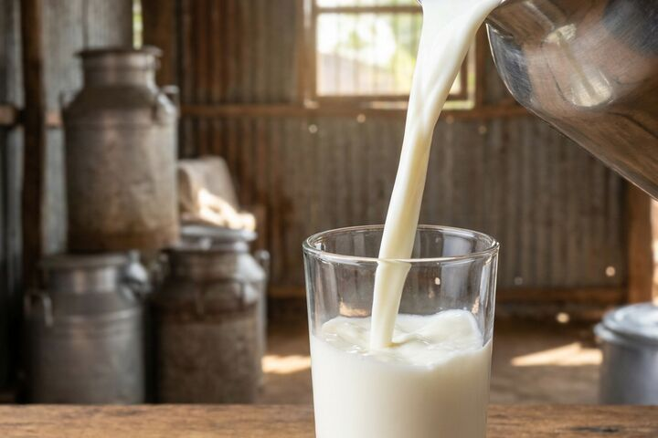

Gokul milk costlier from Saturday: buffalo up ₹6 a litre, cow up ₹4
The selling price of cow milk from Gokul Milk Union goes up ₹4 a litre, and the purchase price of buffalo milk paid to producers by ₹3 a litre.

IllustrationGokul milk is costlier from Saturday, 21 November: Gokul Milk Union has raised the selling price of buffalo milk by ₹6 a litre and of cow milk by ₹4.
The ₹6 rise is the biggest milk price hike in Gokul's history. The decision was taken at a meeting of the board of directors of Gokul Milk Union.
The board revised both purchase and selling prices, keeping in mind the condition of milk-producing farmers and of the union itself. The purchase price of buffalo milk paid to producers goes up by ₹3 a litre, and that of cow milk by ₹2.
The union is said to need the large increase in selling prices to make up for the financial blow it has suffered and a deficit of about ₹70 crore.
Gokul may decide on another milk price hike in January, depending on overall milk availability and market conditions.